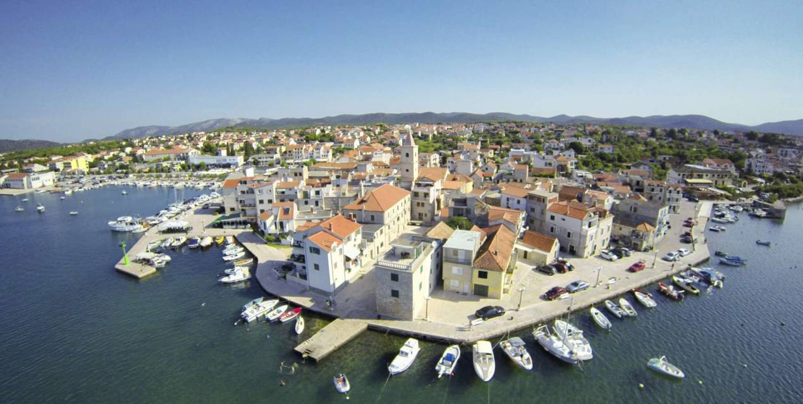

Pirovac is a medieval settlement and fortification of the oldest croatian nobelmen, tradition of mediterranean agriculture as well as touristic climatic and recreational center. Pirovac is a lively place which nature has endowed placing it on the coast between the sea and the Lake Vrana.. It is situated in a bay characterized by an unusual fact that the sea temperature within it is 4 degrees higher than the rest of the Adriatic Sea. Mild climate dominates over this area and provides nice warm summer and mild winters The coast is characterized by its indentednes and numerous bays with clear beaches with stones and pebbles and the islands in whose archipelago we find the National Park „Kornati“. This place will give you the possibility to explore the hidden beauties by yourselves.Walking through the beautiful nature, bike rides, sports and recreational activities, sailing, diving, visiting historical and cultural antiquities, tasting dalmatian specialties... there are numerous possibilities for pleasant holidays and enjoyment. Pirovac is adorned by numerous attractions which are the reflection of the past times when this area was a significant center of the knights templars. The old part of the town on the coast with its medieval walls and „The Gates of the village“ are one of the most interesting symbols of Pirovac and the motive of your camera. Meet the old nucleus, peek intothe hidden stone streets called „kale“ which keep the trace of the past centuries.